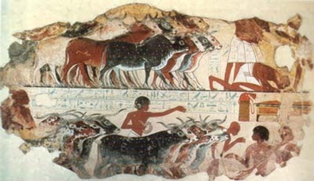
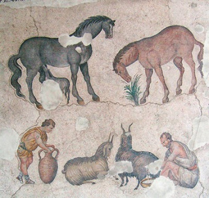

Historia Veterinaria
En Asia y Africa, de la India a Egipto, se encontraron las primeras evidencias de la práctica veterinaria. En el desierto del Sahara en edificaciones de 2.500 A.C existen decoraciones que muestran la asistencia individual dada a los terneros. El papiro Kahum (1.800 A.C.) están impresas las discusiones sobre el diagnóstico y tratamiento de animales y peces. El Código de Hammurabi (1.700 A.C.), en Babilonia legalizó la práctica veterinaria y estableció derechos y obligaciones de la profesión.
¿Cómo se llamaba en la antigüedad la práctica de curar los animales y en especial los equinos?
En Grecia las personas que practicaban la medicina en los caballos eran "hippiatros", de lo que derivó la palabra hipiatra. Después de la caída del Imperio Romano, entre los años 400 y 1200 de nuestra era, la cultura grecolatina, sólo fue conservada por la cultura árabe.
